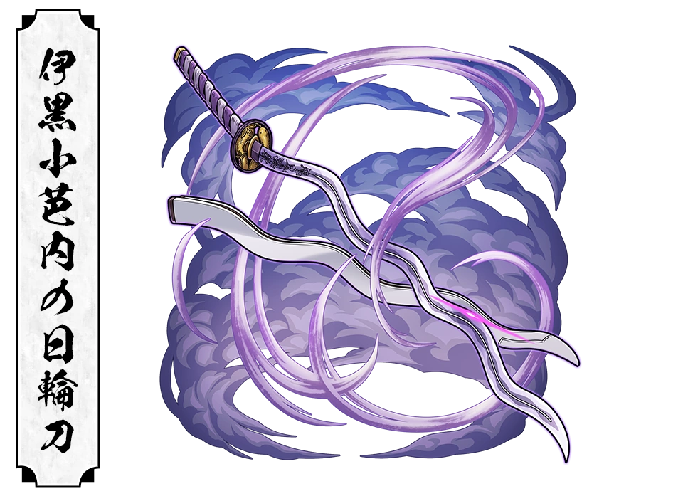

"If it means defeating demons, I will gladly give my life"
About
Obanai Iguro is the Serpent Hashira of the Demon Slayer Corps and one of its most disciplined and dedicated swordsmen. Known for his strict personality and unwavering loyalty, he places the corps mission above everything else.Despite his cold and harsh attitude, Obanai deeply cares for his comrades and is willing to sacrifice himself to protect humanity.
Haunted by a tragic childhood and overwhelming guilt, Obanai dedicates his life to destroying demons and hopes to free himself from his family's dark past. His unique serpent breathing techniques and his loyal snake companion, kaburamaru, make him one of the most distinctive Hashira.
Basic Information
Full Name : Obanai Iguro
Japenese Name :
Alias : Serpent Hashira
Gender : Male
Race : Human
Age : 21
Birthday : September 15
Height : 162 cm (5'4")
Weight : 53kg (117 lbs)
Hair Color : Black
Turquoise (Right), Yellow (left)
Occupation : Demon Slayer
Rank : Hashira
Affilation : Demon Slayer Corps
Breathing Style : Serpent Breathing
Status : Deceased
Appearance
Obanai has straight black hair, mismatched eyes, and bandages covering the lover half of his face due to scars from his childhood. He wwars a black and white striped haori over the standard demon slayer corps uniform, around his shoulders is his trusted white snake, kaburamaru, who assists him during his battles.
Personality
Obanai is serious, strict, and highly disciplined. He expects excellence from himself and others, often appearing cold or intimidating. Beneath this stern exterior, however, lies a kind and selfless man who deeply values his fellow Hashira and especially cares for Mitsuri Kanroji
His greatest wish is to defeat muzan and be reborn into a peaceful life free from the burden of his past.
Fighting Style
Obanai uses Serpent Breathing, a style derived from Water Breathing. His attacks are fast, twisting, and unpredictable, mimicking the movements of a sanke. Combined with kaburamaru's assistance, he can strike from impossible angles and confuse even the strongest demons
Serpent Breathing Forms
First Form: Winding Serpent Slash
Second Form : Venom Fangs of the Narrow Head
Third Form : Coil Choke
Fourth Form : Twin-Headed Reptile
Fifth Form : Slithering Serpent
Nichirin Sword

Color : Lavender
Type : Wavy Katana
Guard : Snake Shaped
Specialty : Curved Blade designed for Serpent Breathing techniques
Abilities
Serpent Breathing Master
Master Swordsman
Extraordinary Agility
Exceptional Reflexes
Tactical Intelligence
Demon Slayer Mark
Transparent World
Crimson Nichirin Blade
Major Battles
Nakime (Upper Rank Four)
Muzan Kibutsuji
Infinity Castle Battle
Sunrise Countdown Arc
Relationships
Mitsuri Kanroji
The Person Obanai mloved the most. He admired her kindness and hioed they could be together in another life
Kaburamaru
His loyal white snake companion, who fights alongside him and helps compensate for his limited vision
Kagaya Ubuyashiki
Obanai was fiercely loyal to the leader of the Demon Slayer Corps
Tanjiro Kamado
Initially Distrustful of tanjiro, but later came to respect his determination
Trivia
Obanai always carries kaburamaru, his pet snake
His mouth was scarred by a demon during childhood
He wears bandages to hide those scars
He loved Mitsuri
His sword has one of the most uniquer blade designs among all harshiras
Legacy
his determination, discipline and ultimate sacrifice during the battle against muzan prove his unwavering devotion to humanity. Though burdened by a painful past, he chose to dedicate his life to protecting others, leaving behind a legacy of courage, loyalty, and selflessness